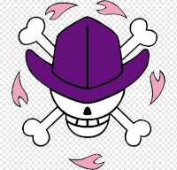

Você pode baixar um arquivo.ICO no site ICON ARCHIVE
Também existe o FAVICON.CC que serve para você desenhar icons.
Já o FAVICON.IO serve como convertor, onde podemos converter uma IMAGEM, TEXTO ou EMOJI para o formato icon.
! para adicionar o icon no site basta colocar na head, acima do titulo, link:favicon .